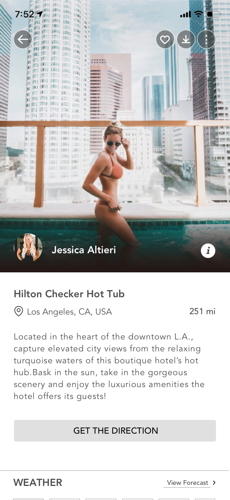
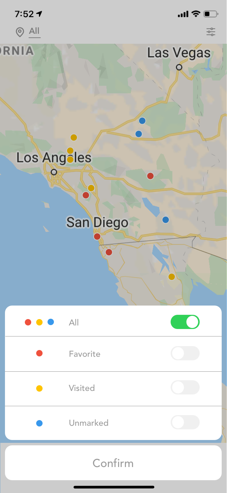
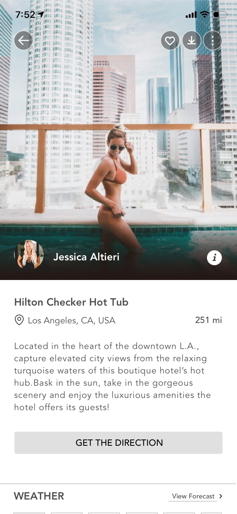
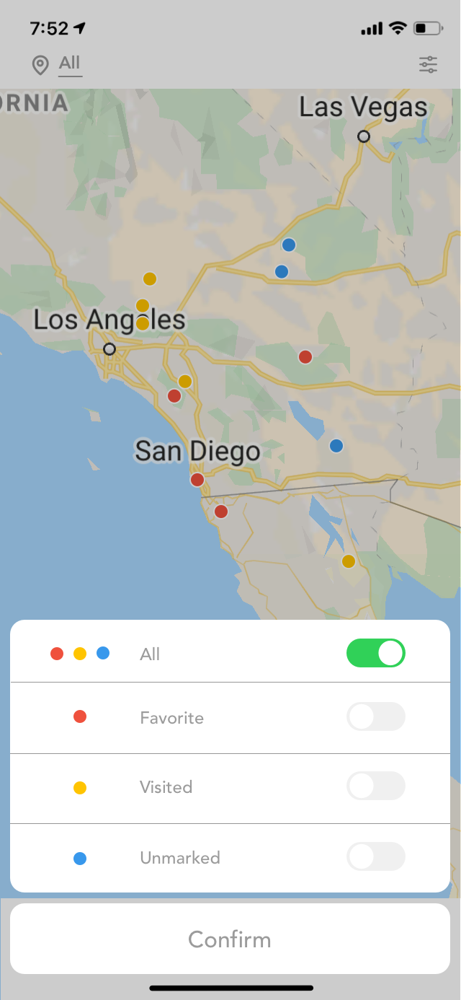

Explorest
Overview
Explorest is an app that discovering the world's greatest photo locations, and offering lots of useful information that an explorer needs to know.
Process
Leaning Goals
What do people care about when it's come to photography?
What do they want to know about a photo?
What's their usual behavier in finding and recording a spot?
What do user want to get from Explorest?
What do people say about Explorest?
User Research
The purpose of this research is to collect qualitative data to understand a user's emotions about when they using this APP and to listen to anecdotal stories related to the experience of finding a photo spot.
For my research, I collecting the user reviews from App Store's ratings and reviews, and also interviewed 4 users for problem discovery. They are people who love taking photos and some of them had been using this APP before.
31
Survey
4
Interview
2
Personas
User Quotes
“ So much information on one page, I have to scroll up and down. ”
“ Icon of 'add to favorites' is quite confusing because it's a bookmark icon and there's only a few differences between tab before and after. ”
“ When I go to the map function, I expect to see my favorites on the map directly. ”
“ Scenery is everything. If the view is great, I would like to go there whatever. ”
Finding & Learning
After conducting a series of user interviews, I synthesized the user insights and each color represents each user.
Synthesis
EXAMPLES
Clustering

Survey
To learn about users' photography preferences, I used a 5 point Likert scale in my survey research. I asked users to rank the importance on a 1 to 5 basis with 1 indicating it is the least important(least concerned) element and 5 being the most important(most concerned) element in the photography decision-making process.
Here's the 5 point Likert scale results visualization I made by D3.js.
From the results, I found that the most important 4 elements for photography lovers are Scenery, Weather, Type of photos and People who go with you.
Insights
Here are some findings and learning I collect from my research which effect my redesign.
- Scenery is the most important element for photography lovers.
- Most people considered people who go with them as the most important element. Photography lovers usually prefer to go shoot with photography friends and models.
- Vehicle and weather may impose restrictions on travel and shooting.
- Type of photos and photographic equipment are related to user interests. People are using different photographic equipment when taking different types of photos.
- Many people are concerned about flying a drone because they are unsure about the rules. Different cities/countries have different rules in the height, range(distance) and time.
Persona
Heuristic Evaluation


- Only focus on a few cities in the world.
- When adding more locations from all over the world, the top filter bar needs to be changed.
- No ratings and reviews of locations.
- The biggest button on the home page is useless cause this button is only used for taking photos
- All the locations on the map are marked in the same color(except the currently selected location).
- Duplicate conten.
- Open in Amazon without a hint.
- Too many contents on a scrolling page
- Misunderstand what the 'request+' mains
- Icons confused people
Redesign Goals
Making this app more intuitive to use and letting users easier to pursue their goals. Making improvements in the user interface to providing a cleaner presentation of the content.
Functionality
- Improve the connection between users.
- Adding the function of sending direct messages.
- Ratings and reviews of locations.
Usability
- When adding more locations from all over the world, the top filter bar needs to be changed.
- Too many contents on a scrolling page
- Duplicate content
- The biggest button on the home page is useless
Accessibility
- Misunderstand what the 'request+' mains.
- Open in Amazon without a hint
- All the locations on the map are marked in the same color (except the currently selected location).
Visual Design
- Icons confused people.
- Title of the location is too long (is it designed for a easy search? People who looks for photo location don't care about what's in the photo, they care about where they can take this photo)
Low Fidelity Prototype
Testing
I wanted to try two different layouts for 3 pages and decided to A/B test these layouts on my users. I wanted to understand how efficient it was for users to find something they were looking for.
Showing locations on the map
A
B
Results: A
Feedback
- A bottom navigation bar that includes all important functions.
- Feels intuitive to find the map function on the Home page navigation bar.
Filtering Locations on the map
A
B
Results: A
Feedback
- The bigger size filter makes more sense.
- Users would like to get access to the whole map.
- Make the filter more clear and specific.
Photo location details on the map
A
B
Results: A
Feedback
- Bigger images are better.
- Bigger images are waste spaces, users want to see the full map.
High Fidelity Prototype
 


